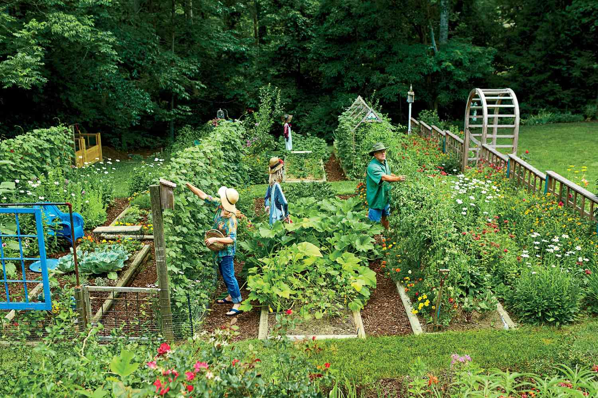

We love plants, especially those that produce food for us to eat. We want to share that joy with others, which is why we set up this app. Here you can buy various seeds for different plants, like cucumber seeds, pumpkin seeds, etc. We share basic information about the plants, like the height they generally grow up to, as well as what season they are usually harvested in.
Our prices are very fair to both us and you - the customer. We pride ourselves in affordable prices and high quality seeds that yield high amounts of high-quality produce.
This app is aimed at aspiring farmers, as well as those who are experienced in the craft. We want everyone to be able to experiences the joy of tending to plants and then reaping the fruits of the labor during a harvest. There's something special about eating home-grown produce that beats out the store-bought stuff. It just tastes better.
An added benefit is the physical labor of tending to the plants, as well as maintaining a proper garden, which promotes a healthier and more active lifestyle. If you've never tried growing produce on your own we urge you to at least try; we can almost guarantee that you'll find joy in it.
